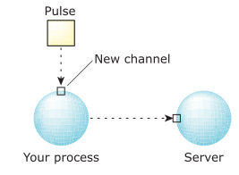
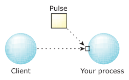

Create a communications channel
#include <sys/neutrino.h>
int ChannelCreate( unsigned flags );
int ChannelCreate_r( unsigned flags );
int ChannelCreatePulsePool( unsigned flags,
struct nto_channel_config const* config );
For more information, see below.
Creating a private pulse pool,below.
libc
Use the -l c option to qcc to link against this library. This library is usually included automatically.
The ChannelCreate() and ChannelCreate_r() kernel calls create a channel that can be used to receive messages and pulses. Once created, the channel is owned by the process and isn't bound to the creating thread. These functions are identical, except in the way they indicate errors. See the Returns section for details.
ChannelCreatePulsePool() is similar to ChannelCreate() but creates a private
pulse pool for the channel; see
Creating a private pulse pool,
below.
Threads wishing to communicate with the channel attach to it by calling ConnectAttach(). The threads may be in the same process, or a different one.
Once attached, these threads use MsgSendv() or MsgSendPulse() to enqueue messages and pulses on the channel. Messages and pulses are enqueued in priority order.
To dequeue and read messages and pulses from a channel, use MsgReceive(). Any number of threads may call MsgReceive() at the same time, in which case they block and queue (if no messages or pulses are waiting) for a message or pulse to arrive. A multithreaded server typically creates multiple threads and has them all RECEIVE-blocked on the channel.
The return value of ChannelCreate() is a channel ID and identifies the newly created channel owned by the calling process. Most managers use a single channel for most, if not all, their communications with clients.
By default, when a message is received from a channel, the thread priority
of the receiver is set to match that of the thread that sent the message.
This basic priority inheritance prevents priority inversion.
If a message arrives at a channel and there's no thread waiting to receive it,
the system boosts (if necessary) all threads in the process that have received
a message from the channel in the past.
This boost prevents a priority inversion of the client in the case where all threads are currently
working on behalf of other clients, perhaps at a lower priority.
For more information, see
Server boost
in the Interprocess Communication chapter of the System Architecture guide.
Priority inheritance can be disabled by setting _NTO_CHF_FIXED_PRIORITY in the flags argument. In this case a thread's priority isn't affected by messages it receives on a channel.
A manager typically involves the following loop. There may be one or more threads in the loop at a time. Typically your program calls ChannelCreate() only once, and all threads block on that channel.
chid = ChannelCreate(flags);
...
for(;;) {
/*
rcvid = MsgReceive(chid, &msg, sizeof(msg), &info);
if(rcvid == -1 ) {
// handle error
} else if (rcvid == 0 ) {
// handle pulse
} else {
// handle message, typically identified by a message type
/* msg is filled in by MsgReceive() */
switch(msg.type) {
...
}
MsgReply(rcvid, status, &reply, sizeof(reply));
}
}
Some of the channel flags in the flags argument request changes from the default behavior; others request notification pulses from the kernel. The pulses are received by MsgReceive() on the channel and are described by a _pulse structure.
The channel flags and (where appropriate) associated values for the pulse's code and value are described below:

In this scenario, your process is acting as a client to a server. If the server's channel is destroyed, a pulse is sent to your new channel (the one you're creating with this call) for each connection from your process to the server's channel.
| Pulse code | Pulse value |
|---|---|
| _PULSE_CODE_COIDDEATH | Connection ID (coid) of a connection that was attached to a destroyed channel |
Note that if a server exits or closes its channel at more or less the same time that the client closes a connection to the channel, the kernel might or might not send a _PULSE_CODE_COIDDEATH pulse to the client. If the client then opens a new connection to another server before getting the pulse, the pulse will seem to indicate that it's the new server that has died. Your code for handling the _PULSE_CODE_COIDDEATH pulse needs to include something like this:
void
got_pulse(struct _pulse *pulse) {
if(pulse->type == _PULSE_CODE_COIDDEATH) {
int coid = pulse->value.sival_int;
if(ConnectServerInfo(0, coid, NULL) != coid) {
// server's really gone, so clean up the connection state
} else {
// stale pulse; probably can ignore it
}
}
}

In this scenario, your process is acting as a server. If the client detaches all of its connections to the channel (the one you're creating with this call), a pulse is sent to the channel.
| Pulse code | Pulse value |
|---|---|
| _PULSE_CODE_DISCONNECT | None |
If a process dies without detaching all its connections, the kernel detaches them for it. When this flag is set, the server must call ConnectDetach( scoid ) where scoid is the server connection ID in the pulse message. Failure to do so leaves an invalid server connection ID that can't be reused. Over time, the server may run out of available IDs. If this flag isn't set, the kernel removes the server connection ID automatically, making it available for reuse.
Processor affinity, clusters, runmasks, and inherit masksin the Programmer's Guide.
If the receiving thread is running on a processor that the new runmask excludes, the thread is rescheduled.
Pausing a message allows the kernel to avoid deadlock. When the kernel resolves things (possibly by loading an appropriate page of memory), it sends a _PULSE_CODE_RESTART to the server, which can then try again to read, write, or reply to the message. For more information, see the entry for MsgPause().
In order to create a public channel (i.e., without _NTO_CHF_PRIVATE set), your process must have the PROCMGR_AID_PUBLIC_CHANNEL ability enabled. For more information, see procmgr_ability().
| Pulse code | Pulse value |
|---|---|
| _PULSE_CODE_THREADDEATH | Thread ID (tid) |
| Pulse code | Pulse value |
|---|---|
| _PULSE_CODE_UNBLOCK | Receive ID (rcvid) |
If the sending thread unblocks, MsgReplyv() fails. The manager may not be in a position to handle this failure. It's also possible that the client will die because of the signal and never send another message. If the manager is holding onto resources for the client (such as an open file), it may want to receive notification that the client wants to break out of its MsgSendv().
Setting the _NTO_CHF_UNBLOCK bit in flags prevents a thread that's in the REPLY-blocked state from unblocking. Instead, a pulse is sent to the channel, informing the manager that the client wishes to unblock. In the case of a signal, the signal will be pending on the client thread. When the manager replies, the client is unblocked and at that point, any pending signals are acted upon. From the client's point of view, its MsgSendv() will have completed normally and any signal will have arrived on the opcode following the successful kernel call.
When the manager receives the pulse, it can do one of these things:
Creating a private pulse pool
Under normal circumstances, pulses are allocated from a global pool when they're delivered and there isn't a thread waiting to receive them. Doing the allocation in this context may be undesirable as pulses are meant to be small, low-overhead messages. Privileged and unprivileged processes share the same global pool, and unprivileged processes can interfere by receiving and not handling large numbers of pulses. Additionally, pulse delivery may fail in low-memory situations.
Creating a pulse pool for a channel reduces interference in these ways:
The ChannelCreatePulsePool() function lets you create channels with fixed pools of pulses that ensure well-behaved servers can receive pulses under most circumstances. The pool itself is allocated when the kernel channel object is created.
When a pulse is sent to a channel that has its own pulse pool, and there's no thread available to receive the pulse, the pulse pool is used. If there are no available pulses in the pool, by default the channel owner is terminated with a SIGKILL. To specify the attributes of the private pulse pool, including what to do when there are no available pulses, use the struct nto_channel_config that the config argument to ChannelCreatePulsePool() points to:
struct nto_channel_config {
struct sigevent event;
unsigned num_pulses;
unsigned rearm_threshold;
unsigned options;
unsigned reserved[3];
};
The members include the following:
Providing a sigevent of type SIGEV_NONE allows a channel to silently drop pulses, but dropping pulses can leave the system in an inconsistent state. For example:
| If rearm_threshold is: | Then the notification: |
|---|---|
| 0 | Fires once and never rearms |
| 1 through num_pulses | Fires and rearms when the pool utilization drops below the value of rearm_threshold |
| Greater than num_pulses | Is permanently armed. Be careful not to overwhelm the system. |
Blocking states
These calls don't block.
The channel ID of the newly created channel. If an error occurs: